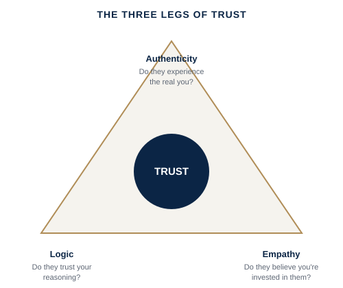

"Be more trustworthy" isn't a plan — it's a wish. Trust breaks down in specific, diagnosable ways, and each one needs a different fix.
A new team that's polite but not honest with you yet; a stakeholder relationship that survived a mistake but never fully recovered; a leader who is respected but not trusted enough for people to bring them bad news early.
Harvard Business School's Frances Frei and her colleague Anne Morriss studied why trust breaks down between leaders and the people around them, and found it almost always comes down to a wobble in one of three legs: authenticity (do people experience the real you, or a performance?), logic (do they trust the soundness of your judgment and reasoning?), and empathy (do they believe you're genuinely invested in them, not just in the outcome?). Most leaders assume a trust problem is about likability or track record, and try to fix it by working harder or being nicer — but if the actual wobble is in logic, for example, no amount of warmth repairs it; you need to be more transparent about your reasoning instead. Diagnosing which leg is unstable, before trying to fix it, is what actually rebuilds trust faster.

A simplified, educational adaptation of Frances Frei and Anne Morriss's trust framework.
Why "be more trustworthy" doesn't work → the three legs of trust, and how to diagnose which one is actually broken.
Extended video (15-25 min), an original PDF framework/checklist, a practical application workbook, and a curated summary of Frances Frei and Anne Morriss's Unleashed and Stephen M.R. Covey's The Speed of Trust.
Free if you’re an active coaching client · Subscription access for the general public opens soon.